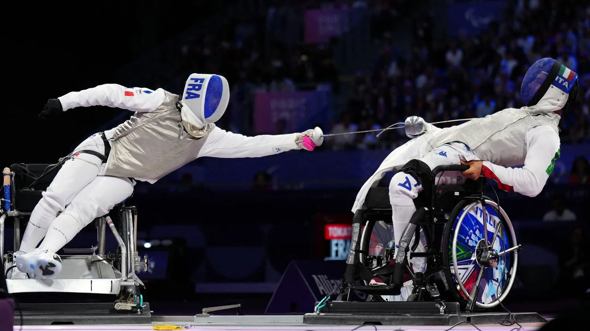

Describing focus on inclusivity and breaking barrier

-
Paralympics offer a chance for athletes with disabilities to compete
professionally, giving them a chance to break stereotypes and showcase
the human body's glory.
-
The Paralympic provide specially-abled athletes equal opportunities to
compete internationally.
-
These games help promote inclusivity, diversity and acceptance, values
which are key for the progress of humanity, and act as inspiration for
many people in challenging times.
-
The Paralympics showcase the incredible feats of engineering in the
devices that allow the athletes to compete, giving way to new and
improved sports technology in the future.